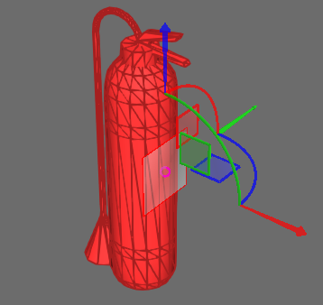
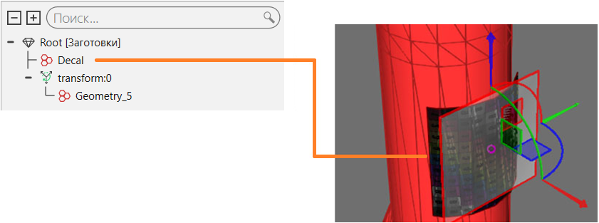

Добавление декаля |
|
Декаль можно добавить к компоненту, используя геометрию для предварительного формирования формы с текстурными координатами. Добавленная форма содержится в новом элементе Geometry, которму вы должны назначить материал. В большинстве случаев материал декали имеет файл текстуры, например изображение, которое можно сопоставить с поверхностью. 1.В трехмерном мире выберите компонент. 2.На вкладке Моделирование в группе Геометрия, нажмите стрелку Инструменты, а затем в разделе Материал нажмите Добавить декаль. 3.На панели задач Добавить декаль, наберите Ширину и Высоту, чтобы изменить размер предварительного просмотра декали. 4.Переместите предварительный просмотр надписи в нужное место на компоненте, например, на одну область его поверхности.  5.На панели задач Добавить декаль, наберите U Плитка, V Плитка и Смещение до нужных значений, а затем щелкните Декаль.  6.Если вам нужно внести изменения в декаль, например, в ее UV-развертку, отредактируйте предварительный просмотр декали и создайте новый декаль, а затем удалите элемент геометрии старого декаля. 7.На вкладке Моделирование в группе Геометрия, нажмите кнопку Инструменты, а затем в разделе Материал, нажмите Назначать. 8.Используйте панель задач Назначить материал, чтобы назначить материал для вашей декали в 3D-мире. |